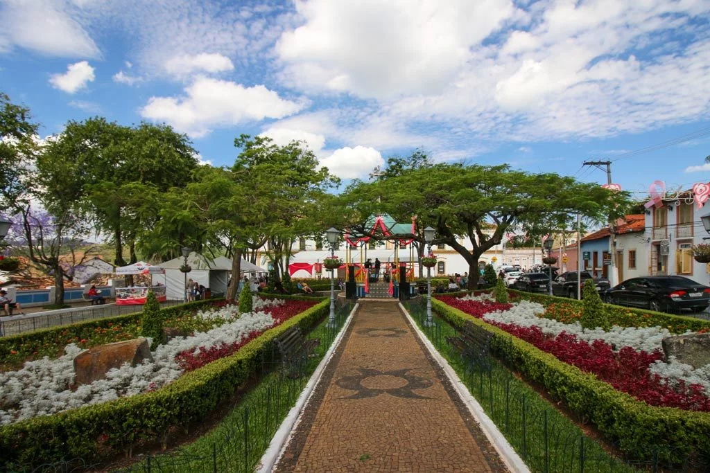

Santana de Parnaíba é considerada um dos mais importantes patrimônios históricos de São Paulo, com um centro que preserva a arquitetura colonial e mantém viva a memória dos bandeirantes. Fundada em 1580, a cidade respira história e encanta visitantes com suas ruas de pedra, casarões tombados e tradições culturais que se renovam a cada geração.
Ao mesmo tempo em que valoriza seu passado, o município investe em infraestrutura e serviços modernos, garantindo qualidade de vida para seus moradores. O crescimento urbano foi planejado para integrar a preservação histórica com a modernização, o que torna a cidade um exemplo de equilíbrio entre tradição e desenvolvimento.
A cidade também se destaca pelos seus eventos religiosos e culturais, como a Encenação da Paixão de Cristo, que atrai milhares de visitantes todos os anos. Essa combinação de fé, cultura e lazer faz de Santana de Parnaíba um destino único no estado, onde o turismo histórico e a hospitalidade caminham lado a lado.
• Centro Histórico – Conjunto de mais de 200 imóveis tombados, com arquitetura colonial preservada.
• Igreja Matriz de Sant’Ana – Um dos marcos mais antigos e importantes da cidade, construída no século XVII.
• Museu Anhanguera e Casarão – Espaço dedicado à memória dos bandeirantes e da história local.
• Evento Encenação da Paixão de Cristo – Tradição cultural e religiosa que reúne milhares de visitantes todos os anos.

Retorne a Página Anterior